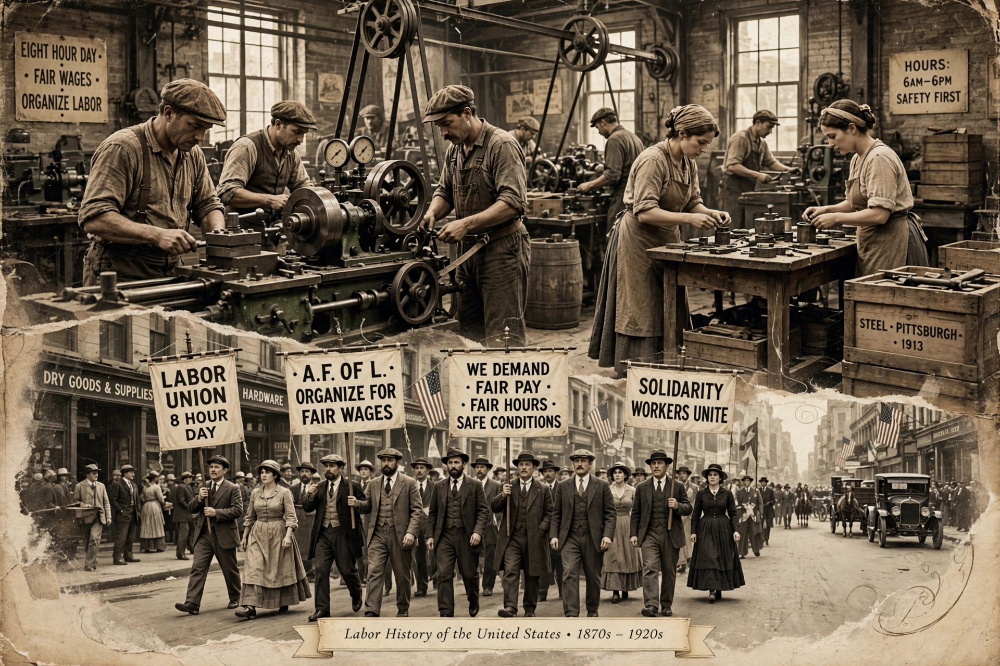

The labor history of the United States traces the struggle of American workers to organise unions, win collective bargaining rights, and improve wages and conditions from the early republic to the present.
Early trade unions of skilled craftsmen gave way to mass movements: the Knights of Labor (founded 1869) and the American Federation of Labor (1886) under Samuel Gompers. Violent confrontations marked the era — the Great Railroad Strike of 1877, Haymarket affair (1886), Homestead (1892) and Pullman (1894) strikes.
The National Labor Relations (Wagner) Act of 1935 guaranteed organising rights, sparking CIO industrial unionism and sit-down strikes such as Flint (1936–37). The Taft–Hartley Act (1947) curbed union power; the AFL and CIO merged in 1955. Union density declined from the 1970s amid deindustrialisation, deregulation and employer opposition, falling to about 10% of workers (about 6% in the private sector) by the 2020s, even as public approval of unions rose. See Trade union.